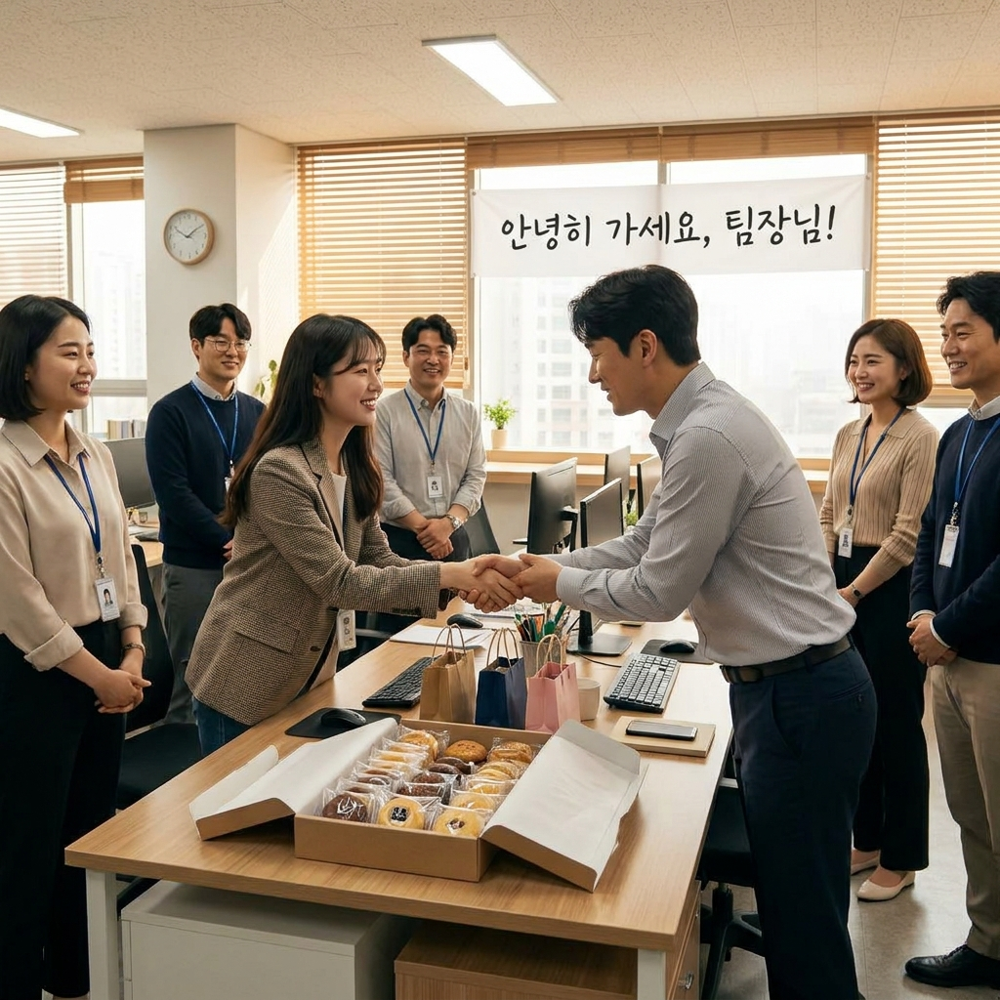

이직·퇴사할 때 동료 작별 인사 문자 예시와 감사 선물 — 직급별 메시지 문구와 커피·간식 돌리는 타이밍 체크리스트
새로운 도전이나 이직으로 정든 직장을 떠날 때 마지막 작별 인사는 그동안 쌓아온 평판과 소중한 인맥 네트워크를 지키는 가장 중요한 비즈니스 에티켓입니다.
작별 메시지는 수신 대상의 관계와 직급(전체 사내 메일, 직속 팀 단톡방, 일대일 선배·동기, 직속 팀장/임원)에 맞추어 톤앤매너를 분리해 전하는 것이 예의입니다.
함께 고생한 동료들에게 부담을 주지 않으면서 감사의 마음을 전하는 퇴사 답례품(개당 3,000원~6,000원 선의 커피 쿠폰, 수제 쿠키, 휘낭시에, 떡 등)의 품목별 비용 비교를 정리했습니다.
감사 간식을 돌리기 가장 적절한 시간대(마지막 날 오후 2시~4시 티타임)와 복사해 바로 쓰는 상황별 인사말 템플릿, 그리고 마지막 날 체크리스트를 상세히 안내해 드립니다.
동료들에게 감사의 마음을 전하기 위해 정갈하게 준비한 퇴사 답례 다과와 감사 카드 / AI 제작 이미지
01 | 퇴사·이직 작별 인사가 직장 생활에서 중요한 이유
직장 생활에서 들어오는 모습(입사)만큼이나 중요한 것이 바로 떠나는 모습(퇴사)입니다.
현대 직장 환경에서는 같은 업계 내에서 이직하거나 프로젝트로 다시 마주칠 가능성이 매우 높으며, 이직 과정에서 전 직장 동료나 상사를 대상으로 평판 조회(레퍼런스 체크)가 이루어지기도 합니다.
퇴사 직전 서운했던 감정이나 불만을 표출하는 대신, 그동안 함께 일하며 배운 점과 동료들의 배려에 진심 어린 감사를 표하고 마무리하는 것은 성숙한 프로 직장인의 품격을 보여줍니다.
마지막 날 정성스러운 인사 한마디와 깔끔한 인수인계는 과거의 직장 동료를 평생의 든든한 업계 지인이자 인적 네트워크로 전환시키는 계기가 됩니다.
02 | 직급별·수신 대상별 인사말 톤앤매너 기본 원칙
작별 메시지는 모두에게 같은 내용을 일괄 복사해 붙여넣기보다는, 대상과의 친밀도와 직급에 따라 문체를 달리해야 진정성이 전달됩니다.
1. 전체 사내 작별 메일: 간결하고 정중한 격식체(하십시오체)를 사용합니다. 재직 기간, 감사 인사, 인수인계 담당자 안내, 개인 연락처를 명확히 기재합니다.
2. 직속 팀장 및 상사 대상: 그동안 배운 업무적 지도와 배려에 대한 구체적인 감사 사례를 언급하며, 앞으로도 가르침을 청하겠다는 겸손한 태도를 담습니다.
3. 가까운 팀원 및 동료 단톡방: 따뜻하고 부드러운 어조(해요체)로 함께 고생했던 추억을 가볍게 언급하며 퇴사 후에도 사적으로 인연을 이어가자는 메시지를 전합니다.
4. 타 부서 협업 담당자: 업무적으로 도움을 받았던 점에 감사하며 각자의 자리에서 건승을 기원하는 비즈니스 매너를 유지합니다.
03 | 그대로 복사해 쓰는 상황별 작별 인사 메시지 템플릿
실제 퇴사 당일에 상황별로 바로 복사하여 약간의 개인 내용만 수정해 활용할 수 있는 추천 문구 4종입니다.
✉️ 상황별 퇴사·이직 작별 인사 추천 문구 모음
[1. 사내 전체 작별 인사 메일]
"안녕하십니까, [소속팀] [이름]입니다.
제가 오늘 자(O월 O일)를 마지막으로 정든 회사를 떠나 새로운 도전을 시작하게 되었습니다.
재직하는 동안 부족한 저를 너그럽게 이끌어주시고 아낌없는 격려와 도움을 주신 임직원 여러분께 진심으로 머리 숙여 감사드립니다.
이곳에서 훌륭한 분들과 함께 일하며 배우고 성장했던 기억은 앞으로 제 커리어에 큰 자산이 될 것입니다.
남겨진 업무는 [인수인계 담당자 직급/이름]님께 꼼꼼히 인계하였으니 업무에 차질이 없으시길 바랍니다.
언제나 건강하시고 가정에 행복과 건승이 가득하시기를 진심으로 기원합니다.
개인 연락처: [전화번호] / [개인 이메일]
[이름] 올림"
[2. 팀 단톡방 작별 인사]
"팀원 여러분, 오늘을 끝으로 팀을 떠나게 되었습니다.
프로젝트로 바쁘고 치열했던 순간마다 옆에서 든든하게 힘이 되어주시고 함께 고민해 주셔서 큰 힘이 되었습니다.
좋은 팀원분들과 함께할 수 있어 정말 큰 행운이었고 매 순간 감사했습니다.
몸은 떠나지만 밖에서도 언제나 팀을 응원하겠습니다. 밖에서 편하게 커피 한잔하며 종종 소식 전하겠습니다! 그동안 정말 감사했습니다."
[3. 직속 팀장/임원 1:1 감사 문자]
"팀장님, 그동안 업무적으로 많은 가르침을 주시고 든든하게 이끌어주셔서 진심으로 감사드립니다.
방향을 잡지 못하고 서툴렀을 때마다 팀장님께서 조언해 주신 말씀들이 제게 큰 배움이자 성장의 밑거름이 되었습니다.
새로운 곳에서도 팀장님께 배운 프로다운 태도를 잊지 않고 성실히 임하겠습니다.
늘 건강하시길 바라며 종종 인사 올리겠습니다. 감사했습니다, 팀장님!"
[4. 타 부서 협업 담당자 메신저/문자]
"[담당자 직급/이름]님, 제가 오늘 자로 퇴사하게 되어 인사드립니다.
그동안 함께 업무를 진행하면서 늘 빠르고 친절하게 협조해 주신 덕분에 수월하게 일할 수 있었습니다.
따뜻한 배려에 깊이 감사드리며, 하시는 일 모두 번창하시길 응원하겠습니다. 감기 조심하시고 늘 행복하세요!"
04 | 퇴사 감사 선물 품목별 예산 및 비용 비교표
퇴사 시 동료들에게 돌리는 다과나 선물은 고가의 물품보다는 부담 없이 그 자리에서 즐길 수 있는 개별 포장 간식이 가장 선호됩니다.
| 선물 품목 |
1인당 예상 비용 |
장점 |
단점 및 주의사항 |
추천 대상 |
| 커피 전문점 모바일 쿠폰 |
4,500원 ~ 6,000원 |
비대면 전송 용이, 실용성 1위, 취향 타지 않음 |
물리적인 온기나 손맛은 다소 부족함 |
타 부서 협업 담당자, 재택근무 동료 |
| 수제 구움과자 (휘낭시에·쿠키) |
3,000원 ~ 4,500원 |
개별 포장 깔끔, 고급스러운 이미지, 티타임 적합 |
당일 또는 익일 섭취 권장, 유통기한 확인 |
소속 팀원, 가까운 층 동료 |
| 개별 포장 답례 떡·호두과자 |
2,500원 ~ 3,500원 |
가성비 우수, 든든한 간식, 넉넉한 수량 준비 가능 |
젊은 층 취향 차이 존재, 보관 시 굳을 수 있음 |
부서 인원이 30명 이상으로 많은 대규모 조직 |
| 드립백 커피 + 미니 티 세트 |
3,000원 ~ 5,000원 |
사무실 서랍 보관 가능, 유통기한 넉넉함 |
커피나 차를 즐기지 않는 인원 일부 존재 |
야근이나 커피를 자주 마시는 부서 동료 |
| 미니 핸드크림 또는 립밤 |
4,000원 ~ 7,000원 |
실용적 소비재, 환절기 및 겨울철 만족도 높음 |
향에 대한 개인 호불호, 간식 대비 단가 높음 |
소규모 팀(5~10명 내외) 팀원 선물 |
부서 인원수에 맞춰 총예산 5만 원~15만 원 안팎으로 책정하여 팀 전체가 골고루 나눠 먹을 수 있는 품목을 선택하는 것이 가장 무난합니다.

마지막 근무일 오후 동료들과 따뜻한 담소를 나누며 간식을 전달하는 모습 / AI 제작 이미지
05 | 감사 간식을 돌리는 최적의 타이밍과 전달 요령
답례품이나 간식을 전달할 때는 업무에 방해되지 않는 골든타임을 선택해야 합니다.
1. 가장 이상적인 시간대: 마지막 근무일 오후 14:30~16:00 사이입니다. 점심 식사 후 나른해지는 티타임 시간대로 동료들이 잠시 숨을 돌리며 간식을 즐기기에 가장 좋습니다.
2. 피해야 할 시간대: 월요일 아침 회의 시간, 출근 직후(09:00~10:00), 그리고 점심시간 직전(11:30~12:30)이나 퇴근 직전(17:30 이후)은 업무 집중이나 정시 퇴근 준비로 어수선하므로 피하는 것이 좋습니다.
3. 전달 방법: 자리에 계신 동료들에게는 직접 눈을 맞추며 "그동안 정말 감사했습니다, 맛있게 드세요"라는 인사와 함께 건네고, 부재중인 동료의 책상에는 작은 포스트잇에 한 줄 감사 메모를 부착해 올려두는 것이 센스 있는 매너입니다.
4. 비대면 팀의 경우: 슬랙, 잔디, 카카오톡 등의 메신저로 작별 인사를 남긴 후 모바일 기프티콘을 개인 톡으로 전송하시면 충분합니다.
06 | 퇴사 시 절대 하지 말아야 할 4대 금기 사항
유종의 미를 거두기 위해 마지막 날까지 반드시 경계해야 할 주의점입니다.
⚠️ 퇴사 당일 절대 피해야 할 주의 사항
• 이직하는 회사 과도한 자랑 금지: 연봉 인상률, 복지 혜택, 처우 등을 동료들 앞에서 지나치게 언급하면 남아 있는 사람들에게 상대적 박탈감을 줄 수 있습니다.
• 전 직장 불만 및 험담 토로 금지: 퇴사한다고 해서 경영진이나 특정 상사의 단점을 지적하는 것은 본인의 평판만 깎아먹는 지름길입니다.
• 업무 방치 및 급작스러운 연락 두절 금지: 본인이 맡았던 파일의 암호를 풀지 않거나 인수인계를 대충 끝내고 나가면 퇴사 후에도 연락이 오게 됩니다.
• 사내 기밀 및 보안 자료 무단 반출 절대 금지: 개인 포트폴리오를 이유로 회사의 영업비밀이나 고객 정보, 소스 코드를 외장 하드에 담는 행위는 법적 처벌 대상이 됩니다.
07 | 완벽한 마무리를 위한 마지막 근무일 인수인계 체크리스트
짐 정리와 행정 절차를 깔끔하게 마무리하기 위한 최종 체크리스트입니다.
📋 마지막 근무일 필수 행정 & 사물 정리 체크리스트
1. PC 포맷 및 개인정보 삭제: 웹 브라우저 자동 로그인 해제, 메신저 로그아웃, 개인 금융/사진 파일 영구 삭제
2. 인수인계 문서화: 폴더별 파일 정리, 진행 중인 이슈 현황, 외부 거래처 연락처 목록을 단일 인수인계서 파일로 취합
3. 사내 대여품 반납: 사원증, 법인카드, 노트북, OTP 단말기, 사물함 열쇠 등 총무팀 반납 확인증 수령
4. 증명서 발급 신청: 경력증명서, 원천징수영수증, 퇴직소득원천징수영수증 발급 담당자 확인
5. 책상 및 사물함 완전 비우기: 개인 소지품을 종이 쇼핑백이나 상자에 담아 깨끗하게 정리 완료
08 | 퇴사 후 첫 주 인맥 관리와 감사 연락 팁
퇴사 후에도 전 직장과의 인연은 완전히 끝나지 않습니다.
퇴사 후 3~5일이 지난 시점에 특히 감사했던 멘토나 팀장님께 "새로운 환경으로 이동하기 전 잠시 숨을 고르고 있습니다. 보내주신 응원 덕분에 잘 마무리했습니다"라는 안부 카톡을 가볍게 남기면 깊은 인상을 남길 수 있습니다.
또한 링크드인(LinkedIn) 등 비즈니스 SNS 계정에 이직 소식을 업데이트하고 전 직장 동료들과 네트워크를 연결해 두면 향후 업계 정보 교류와 협업 기회를 창출하는 데 큰 자산이 됩니다.
09 | 핵심 요약 및 최종 당부의 말
퇴사는 한 조직과의 이별인 동시에, 새로운 커리어 여정의 출발선입니다.
동료들의 입장을 배려한 따뜻한 작별 메시지와 소박하지만 정성 담긴 다과 한 상자는 지난 시간 동안 함께 흘린 땀방울을 아름다운 추억으로 완성해 줍니다.
좋은 끝맺음이 있어야 새로운 시작도 밝게 열리는 법입니다. 품격 있는 마무리로 동료들에게 '함께 일해서 좋았던 사람'으로 기억되며 기분 좋은 발걸음을 내딛으시길 응원합니다.
#퇴사인사문자
#이직작별인사
#퇴사답례품
#퇴사간식돌리기
#퇴사메일예시
#동료감사선물
#퇴사매너
#인수인계체크리스트
#직장인에티켓
#평판관리